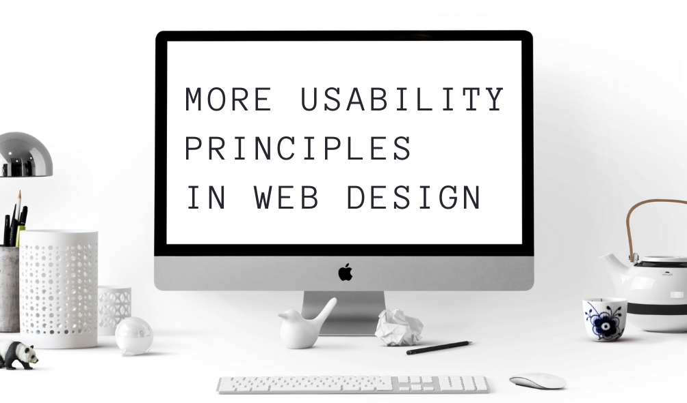

More Usability Principles
Reference: Website Usability Principles

1. Accessibility and Availability
Accessibility and availability are such big factors in usability! An accessible website is one that users can get to and use. If they aren’t able to, then they simply won’t use it, and it will give the site a bad reputation. Designers must be aware who may be trying to use their websites, and that includes people with disabilities. Luckily there are documented standards for how to make your website ADA and WCAG complainant.
Availability is another huge one. If the website is down, the users will know it is not trustworthy. One way, which is perhaps a bit pricier, is to host your website with AWS. AWS provides a comprehensive and managed solution to web hosting that can be trusted since they are known to be reliable and have robust services. It is also huge to have a “mobile-first” approach since that will help search rankings and the users since smartphones have become more available than desktops worldwide.
2. Clarity
This is definitely a concept that requires a bit more nuance. It is easy to add bells and whistles to a website without realizing how it might distract the user or take away from the experience. A user should know what the site is for and where to go to find the intended information or service. The site should be modeled for what people expect to find in regard to what the website offers. For example, landing page for a social media site should have a log in section that’s visible and large. Guidance is another thing that helps users navigate the content. I think that is something which I need to learn about and improve.
3. Learnability
Websites should be easy to learn! This is similar to the “walk-up-and-use” mentality where it should be intuitive and not confuse the user. But the difference from that concept is that you can still teach users how to use the website, but it should be hard to learn. ReggieNet, Illinois State University’s learning management system, is a good example of learnability. It has many features for faculty and students yet utilizes common web standards and is easy to learn.
4. Credibility
Often for more established brands, it is important to maintain a website that reflects the professionalism of your organization. Besides the brand name being known, credibility follows with proper documentation of methodology, sources, experience, education, and customer testimonies. People will always trust, use, and reference the established and credible sources.
5. Relevancy
This principle deals with the content of the website being relevant to the user. Good usability can include allowing the user to define a goal and accomplish it. If the user is not able to hone in on one goal, they will surely find that feature on another website that is more customer-focused.